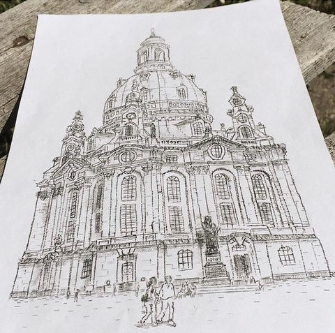

What is Typewriter Art?
What is Typewriter art?
That was my Google Keyword Search when a Gentleman phoned me during the Christmas season of 2017 asking me for a typewriter that will type clearly and doesn't have any sticky keys and all that was after introducing himself as a "Typewriter Artist".
So simply, Typewriter art is a form of art that uses a typewriter to draw a picture.
Luckily, he explained to me that he uses his typewriters to draw patterns & simple drawings by clicking a certain letter and explained to me that there are many famous & talented Typewriter artists all around the world.
One of the most talented artists are London Based Keira Rathbone & Robert Derfler from Germany. They both brilliantly draw faces, buildings and landscapes and i personally follow them on my Instagram and enjoy visiting their accounts.
Picture Below shows the drawing of Frauenkirche in Dresden by Typewriter artist Robert Derfler who was able to make sure that his drawing are detailed and realistic to the extent that at the first glance you think its a pencil drawing. This art piece was one of his favourites.
The Main purpose of my article is not only to share with you the drawings drawn using a typewriter but it is to prove that typewriters have been an inspiration for many to draw like wise to people who used it to type their stories, letters, and notes.
The Typewriter will shift you to a new world where you are totally disconnected from the digital world and its perfection to a world where mistakes are acceptable and can be a lesson to become better instead of being slaves of the digital world that made everything easy and look perfect while leaving us struggling to discover our own talents and learning from our mistakes.